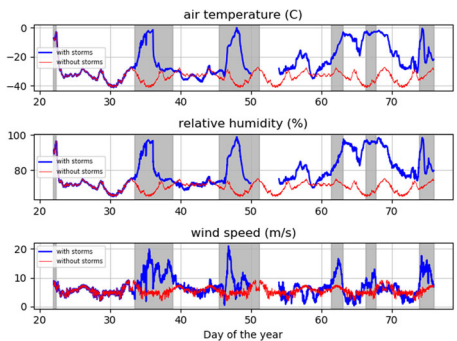
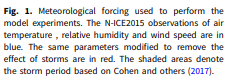

class: center .left-column[<br/><br/><br/> ] .right-column[ <br/><br/> .authors[Author et al. (20XX)] <br/> .title[The Title of the Paper] <br/><br/>.journal[Journal of Something] <br/><br/> .zotbibcode[author_20XX] .linktopaper[[Link to paper](https://www.dagbladet.no)] <br/><br/> .note[Notes by Øyvind Lundesgaard. Created using a modified version of [{Liminal}](https://github.com/jonathanlilly/liminal).] ] --- name: overview class: left # Overview Using a slightly modified version JS Lilly's [{Liminal}](https://github.com/jonathanlilly/liminal)] to create summaries of papers. --- name: basics class: center ## Some basics See [J.M. Lilly's tutorial](http://jmlilly.net/talks/liminal/index.html) for details. <br/><br/> Can use normal makup stylizing such as **bold** or *italic*. <br/><br/> Otherwise, need to use some html basics, such as line breaks. <br/><br/> Figures can be included, e.g.: <img style="width:30%" src="./figure1.png"> Here is a figure, together with a caption that describes it. <br/><br/> See the following page for the code used to produce this. --- name: basics_code class: left ## Some basics (code) ```haml --- name: basics class: center ## Some basics See [J.M. Lilly's tutorial](http://jmlilly.net/talks/liminal/index.html) for details. <br/><br/> Can use normal makup stylizing such as **bold** or *italic*. <br/><br/> Otherwise, need to use some html basics, such as line breaks. <br/><br/> Figures can be included, e.g.: <img style="width:30%" src="./figure1.png"> Here is a figure, together with a caption that describes it. <br/><br/> See the following page for the code used to produce this. ``` --- name: method class: left # Methods --- class: center ##An example figure  --- class: center ##An example figure with two columns .left-column[<br/>Text in the right column.] .right-column[ <br/><br/>  ] --- class: center #An Animation Commented out for now. <!-- <video preload="auto" width="60%" height="auto" data-setup="{}" autoplay loop controls><source src="./videos/vortexmovie.mp4" type="video/mp4" /></video> --> --- name: conclusions class: left # Conclusions